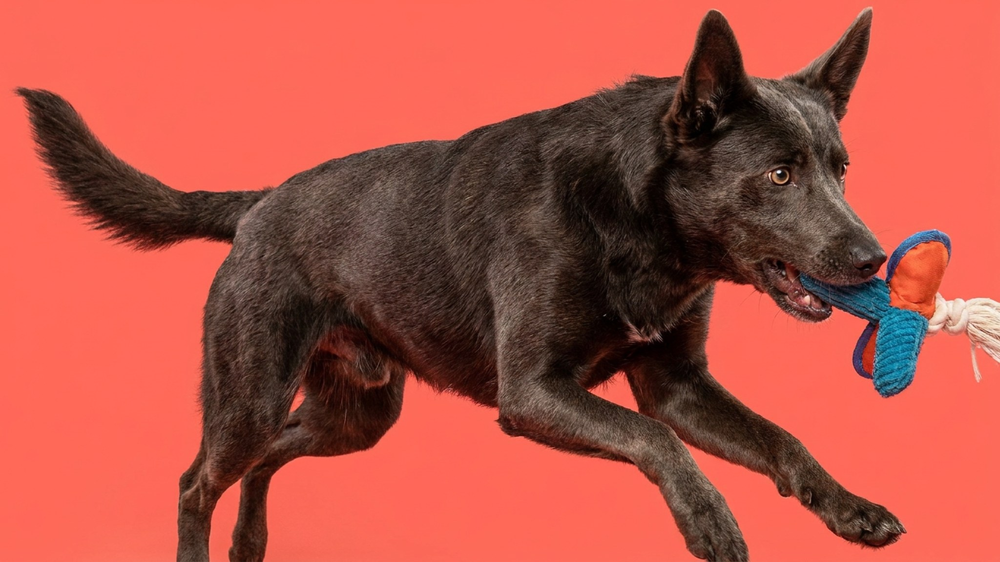

Австралийский келпи способен пробежать за рабочий день десятки километров, разворачивая отару, — и в квартире эта энергия никуда не исчезает. Она уходит в разгрызенный плинтус, вой под дверью и «неуправляемость», за которую породу ругают зря. Ниже — как честно понять, потянете ли вы келпи, и чем занять собаку, которой нужен не выгул, а работа.
🐾 У вас австралийский келпи?
AnimaLife соберёт уход под породу: к каким болезням есть склонность, что проверять по возрасту, чем кормить и когда пора к врачу. Бесплатно, прямо в мессенджере.
Собрать план ухода → Собрать в MAX →
У вас iPhone? AnimaLife есть в App Store
Келпи создавали под одну задачу — управлять стадами на огромных фермах в жару и без отдыха. Отсюда всё: выносливость, скорость, самостоятельность в решениях и постоянное сканирование обстановки. Это не «просто активная собака», а специалист с врождённой потребностью действовать.
Порода бывает двух линий — рабочая (пастушья) и выставочная. Рабочие линии заряжены сильнее и в городе требуют ещё больше занятости.
Две прогулки «вокруг дома» келпи не закрывают. Ему нужна нагрузка, которая грузит и тело, и голову: бег, апортировка, обучение трюкам, собачьи виды спорта. Причём умственная работа утомляет его не меньше физической.
Когда энергии некуда деться, келпи находит применение сам — и хозяину это не нравится. Погрызенные вещи, копание, лай, попытки «пасти» детей и других животных, покусывая за пятки, беготня по кругу. Это не вредность и не глупость, а нерастраченный рабочий инстинкт. Наказания тут не помогают — помогает дать выход энергии.
🐾 Ваш питомец — австралийский келпи?
Заведите профиль в AnimaLife: приложение запомнит породу, возраст и вес и будет подсказывать по уходу именно для неё. Вопросы AI-ветеринару — круглосуточно и бесплатно.
Завести профиль → Завести в MAX →
У вас iPhone? AnimaLife есть в App Store
🐾 Понравился разбор?
Подпишитесь на канал — каждый день разбираем по одному тревожному симптому у кошек и собак: что в пределах нормы, а когда пора к врачу. Подпишитесь, чтобы не пропустить разбор, который может спасти здоровье вашего питомца.
Ферма не нужна — нужна регулярная осмысленная занятость. Хорошо заходят фрисби, аджилити, фристайл, ныр-дайвинг, поисковые игры, велотренинг. Даже 15 минут дрессировки в день заметно снижают «дурь». Приучайте собаку и к спокойному отдыху по команде — чтобы она умела не только работать, но и выключаться.
Честно: это плохой выбор для тех, кто много работает вне дома, любит размеренный ритм и не готов ежедневно заниматься с собакой. В руках же активного хозяина, который хочет спорт и обучение, келпи — блестящий, преданный и невероятно способный партнёр.
Материал носит информационный характер и не заменяет очную консультацию ветеринара.